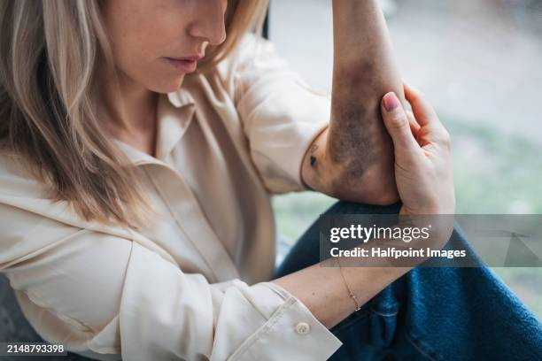
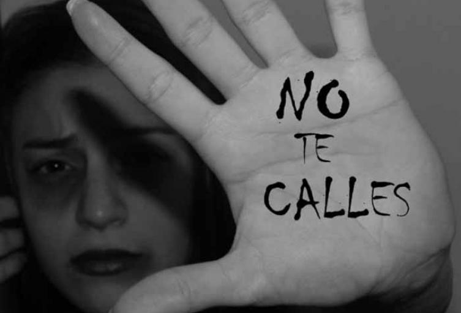

Violencia de género a través de la intervención psicosocial
70
De víctimas mejoran con intervención psicosocial especializada
60
De los casos no se denuncian por falta de recursos de apoyo
85
De profesionales necesitan más herramientas de intervención


